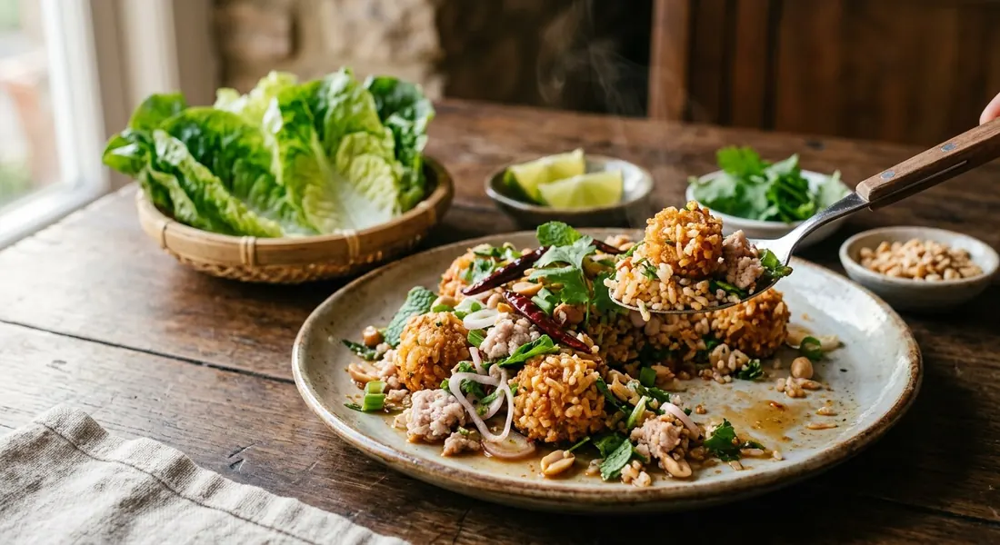

Curry-seasoned rice balls fried to a shell, broken apart while they're still warm and tossed with sour fermented pork, herbs and peanuts — Laos's answer to the salad, eaten wrapped in lettuce.

Nam khao tod — น้ำข้าวทอด, "fried rice water" — is a Lao dish from Thadeua, the river town on the Lao bank of the Mekong, where it carries the name naem Thadeua. Thai cooks call it ยำแหนมข้าวทอด or แหนมคลุก (and sometimes just ข้าวทอดแหนม), and the technique travelled with it: leftover rice seasoned with red curry paste, grated coconut, kaffir lime leaves and egg, rolled into balls, fried until the outside is a shell, then broken up and tossed with naem — the sour fermented pork sausage that is the dish's other half — lime, fish sauce, chilli powder and a pile of herbs.
The Lao classic folds the cured pork straight into the rice ball before frying, and kitchen blogger ครัวบ้านพิม records exactly that: naem blitzed into the rice with the curry paste, fried as one thing. The Isaan table more often keeps them apart — Wongnai's recipe mixes the naem into the salad at the last minute, breaking the hot rice balls over it so the crispness survives the toss. Either way the rice is the engine: Kapook's home cook, who drove round the local markets hunting for the dish and came home empty-handed, found that frying is what makes it — the balls puffed in hot oil until crisp outside and soft inside.
It is eaten as a wrap: a lettuce leaf filled with a spoon of the salad, herbs on top, and a fried dried chilli to finish — the plate of fresh vegetables is not garnish, it is the cutlery.
| Thai | English | Amount |
|---|---|---|
| ข้าวสวย | Rice (cooked) | 3 cups |
| มะพร้าวขูดขาว | Grated coconut | ½ cup |
| ไข่ไก่ | Egg | 1 |
| พริกแกงเผ็ด | Red curry paste | 2 tbsp |
| น้ำปลา | Fish sauce | 1 tbsp |
| น้ำตาลทราย | Sugar | 1 tsp |
| ใบมะกรูดซอย | Kaffir lime leaves, sliced | 1 tbsp |
| น้ำสะอาด | Water | ½ cup |
| แป้งทอดกรอบ | Crisp frying flour | ½ cup |
| น้ำมันพืช | Vegetable oil (for frying) | — |
| แหนมสด | Naem (fermented pork) | 50 g |
| หมูสับ | Minced pork | 100 g |
| หนังหมูซอย | Pork skin, sliced | ¼ cup |
| น้ำปลา | Fish sauce | 1 tbsp |
| น้ำมะนาว | Lime juice | 1 tbsp |
| พริกป่น | Chilli powder | 1 tbsp |
| ขิงซอย | Ginger, julienned | 2 tbsp |
| หอมแดงซอย | Shallots, sliced | 2 tbsp |
| พริกทอด | Fried dried chillies | 4 |
| ต้นหอม | Spring onion | 2 tbsp |
| ผักชี | Coriander | 2 tbsp |
| ถั่วลิสงทอด | Fried peanuts | 2 tbsp |
The Lao-style ball (ครัวบ้านพิม): the same rice and curry paste, but 1 cup of diced naem goes into the rice before shaping — fried as one piece, served with diced ginger, shallots, peanuts, chillies and lime over cold lettuce and betel leaves. The from-scratch naem (Aroifin): 500 g lean pork blitzed fine with 100 g cooked pork skin, 50 g pounded garlic, 1 tbsp salt, 1 tbsp seasoning powder and 2 tbsp cooked sticky rice, bagged with fresh chillies, air pressed out, left 1–2 days at room temperature.
Naem in the ball or in the salad. ครัวบ้านพิม puts diced naem inside the rice before frying — the Lao nam khao form. Wongnai and Aroifin fry plain curry rice balls and mix the naem in at the salad stage, which is the Isaan yam style you'll meet in most Thai restaurants.
Coconut. Wongnai and Aroifin season the rice with grated coconut (Wongnai uses grated white coconut, Aroifin กากมะพร้าวขูด). ครัวบ้านพิม and the Wongnai user recipe for the balls leave it out entirely.
The batter. Wongnai dips in crisp frying flour mixed with water; Aroifin insists the water be ice-cold; ครัวบ้านพิม offers two coats — a soft one of rice flour, egg and limewater, or crisp frying flour with cold water at 1:2 for a hard shell — and Kapook's cook skips the dip altogether, mixing the flour into the rice dough.
Pork skin or minced pork. Wongnai uses both pork skin and minced pork. Kapook's home cook refuses pork skin ("just naem and rice, no picking skin out") and blanches minced pork instead; ครัวบ้านพิม notes the same swap.
The rice. Aroifin and ครัวบ้านพิม both warn against jasmine rice — use a hard, dry rice or the fried balls turn soggy and soft. Wongnai and Kapook don't specify.
This recipe is translated from the following Thai-language sources. Where they disagree, we've said so.
1. Wongnai — "วิธีทำ 'ยำแหนมข้าวทอด' เมนูอาหารอีสานครบเครื่อง รสแซ่บอีหลี" by แม่หญิงแพรวา (the recipe used here) — wongnai.com
2. Aroifin — "วิธีทำ แหนมคลุก ง่าย ๆ ที่บ้าน พร้อมสูตร แหนมหมู – ข้าวทอด กรอบอร่อย" (the from-scratch naem and the cold-water batter) — aroifin.com
3. ครัวบ้านพิม — "ข้าวทอดแหนม" by พิม (the Lao-style ball with naem inside) — pim.in.th
4. Kapook — "ยำแหนมข้าวทอดใส่หมูสับ เผ็ดเปรี้ยวพร้อมวิธีทำข้าวทอด" from Pantip member bangbuatong60d (the pork-skin-free version and the hunt for the dish) — cooking.kapook.com
5. Wongnai (user recipe) — "ข้าวทอด สำหรับทำยำแหนมข้าวทอด" by guneweenz (the bare rice-ball component) — wongnai.com